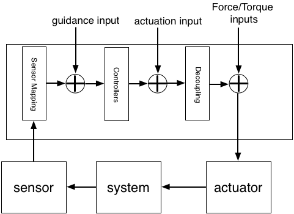

| LTPDA Toolbox™ | contents | |
The state-space model of LPF in LTPDA is extensive and has a total of 294 input ports spread over 32 input blocks. The majority of these inputs are intended as noise inputs, but some are inputs to the control loops of the system.
If you inspect the model using viewDetails you will see an input block called GUIDANCE which has 21 input ports, one for each possible sensor input. These inputs act as set points for the different control loops. For example, injecting a 1nm, 1mHz sine-wave signal on GUIDANCE.ifo_x1 whilst in science mode 1 will cause the SC to oscillate around TM1 by 1nm (or very close to). This is because at these frequencies the loop which controls the relative x postion of TM1 and the SC has very high gain.
The following figure shows schematically the guidance input for the LPF closed-loop system:

| Note: In the current version of the LPF models, the guidance signals are added before the sensor mapping matrix. For all practical purposes, this makes little difference, but this will be corrected in a future version. |
The LTP (or LPF) model also has a set of inputs which we term 'Actuation' inputs. These are commanded forces and torques per unit mass or inertia, and are added to those commands coming from DFACS before the decoupling matrix is applied.
The figure above also shows the actuation inputs in relation to the other inputs discussed here.
After the decoupling matrix, there is another input where we can inject forces and torques per degree-of-freedom on the different actuators. These force/torque inputs are also shown on the figure above.
| |
Topic 4 - Simulating LPF with injected signals. | Building signals | |
©LTP Team